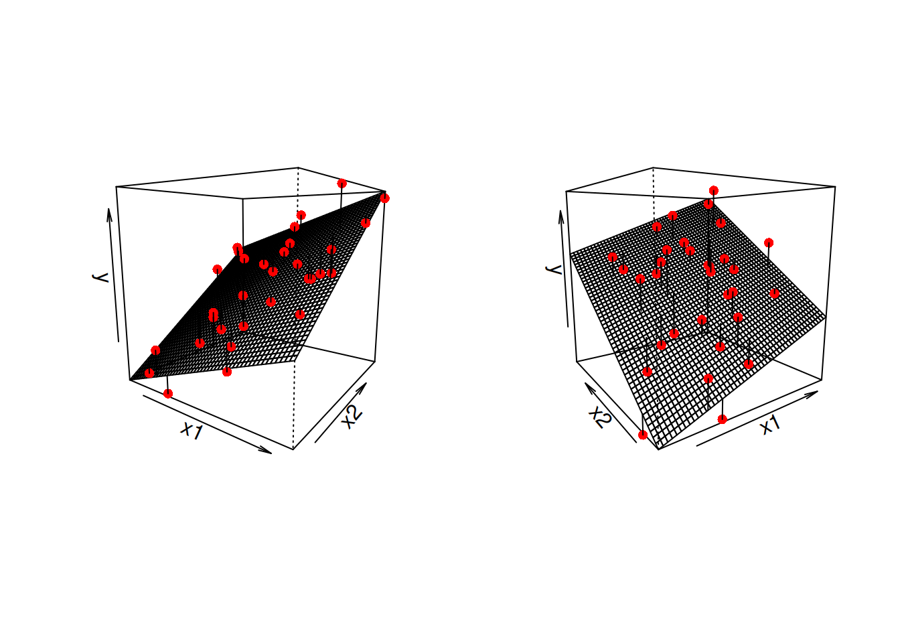
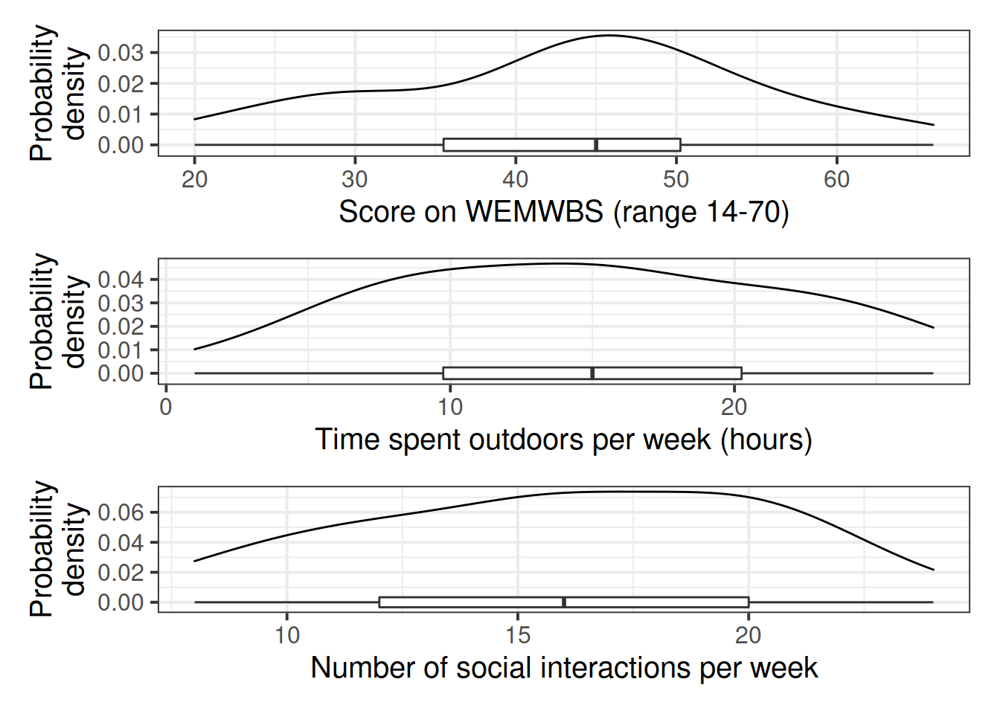
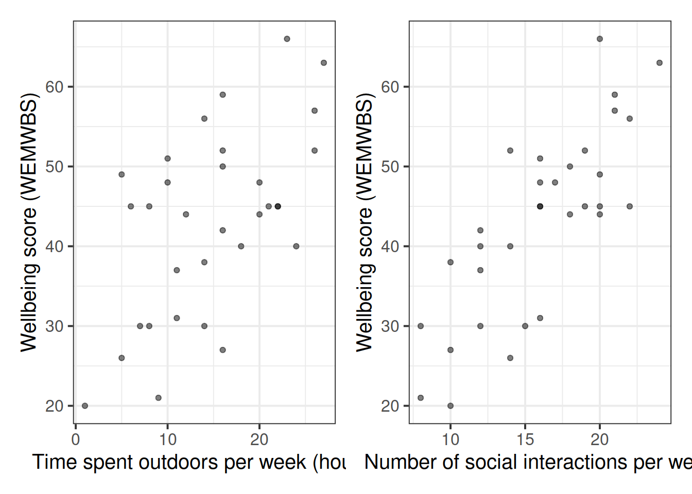

08A: Multiple Linear Regression
In this reading, we move from the simple linear regression model (one outcome variable, one explanatory variable) to the multiple regression model (one outcome variable, multiple explanatory variables).
Everything we learned about simple linear regression in Reading 7A can be extended (with minor modification) to the multiple regression model. The key conceptual difference is that for simple linear regression we think of the distribution of errors at some fixed value of the explanatory variable, and for multiple linear regression, we think about the distribution of errors at fixed set of values for all our explanatory variables.
Multiple Linear Regression
Model formula
For multiple linear regression, the model formula is an extension of the one predictor (“simple”) regression model, to include any number of predictors:
\[ \begin{align} & y = b_0 \ + \ b_1 x_1 \ + \ b_2 x_2 \ + \ ... \ + b_k x_k \ + \ \epsilon \\ & \quad \\ & \text{where} \\ & \epsilon \sim N(0, \sigma) \text{ independently} \end{align} \]
In the model specified above,
- \(\mu_{y|x_1, x_2, ..., x_k} = b_0 + b_1 x + b_2 x_2 + ... b_k x_k\) represents the systematic part of the model giving the mean of \(y\) at each combination of values of variables \(x_1\)-\(x_k\);
- \(\epsilon\) represents the error (deviation) from that mean, and the errors are independent from one another.
Visual
Note that for simple linear regression we talked about our model as a line in 2 dimensions: the systematic part \(b_0 + b_1 x\) defined a line for \(\mu_y\) across the possible values of \(x\), with \(\epsilon\) as the random deviations from that line. But in multiple regression we have more than two variables making up our model.
In this particular case of three variables (one outcome + two explanatory), we can think of our model as a regression surface (See Figure 1). The systematic part of our model defines the surface across a range of possible values of both \(x_1\) and \(x_2\). Deviations from the surface are determined by the random error component, \(\hat \epsilon\).
Don’t worry about trying to figure out how to visualise it if we had any more explanatory variables! We can only concieve of 3 spatial dimensions. One could imagine this surface changing over time, which would bring in a 4th dimension, but beyond that, it’s not worth trying!.
Research Question
The data for this walkthrough is from an hypothetical study in which some reseachers are interested in the relationship between psychological wellbeing and time spent outdoors. They know that other aspects of peoples’ lifestyles such as how much social interaction they have can influence their mental well-being.
Research Question
Is there a relationship between well-being and time spent outdoors after taking into account the relationship between well-being and social interactions?.
Data: Wellbeing
Researchers interviewed 32 participants, selected at random from the population of residents of Edinburgh & Lothians. They used the Warwick-Edinburgh Mental Wellbeing Scale (WEMWBS), a self-report measure of mental health and well-being. The scale is scored by summing responses to each item, with items answered on a 1 to 5 Likert scale. The minimum scale score is 14 and the maximum is 70.
The researchers also asked participants to estimate the average number of hours they spend outdoors each week, the average number of social interactions they have each week (whether on-line or in-person), and whether they believe that they stick to a routine throughout the week (Yes/No).
The dataset is available at https://uoepsy.github.io/data/wellbeing.csv and contains five attributes:
wellbeing: Warwick-Edinburgh Mental Wellbeing Scale (WEMWBS), a self-report measure of mental health and well-being. The scale is scored by summing responses to each item, with items answered on a 1 to 5 Likert scale. The minimum scale score is 14 and the maximum is 70.
outdoor_time: Self report estimated number of hours per week spent outdoors
social_int: Self report estimated number of social interactions per week (both online and in-person)routine: Binary Yes/No response to the question “Do you follow a daily routine throughout the week?”location: Location of primary residence (City, Suburb, Rural)
Model Specification
To address the research question we are going to fit the following model:
\[ Wellbeing = b_0 \ + \ b_1 \cdot Social Interactions \ + \ b_2 \cdot Outdoor Time \ + \ \epsilon \]
Exploring the Data
First we need to import the wellbeing data into R. We’ll give them the name mwdata.
library(tidyverse)
# Read in data
mwdata = read_csv("https://uoepsy.github.io/data/wellbeing.csv")Now, as before, we explore and describe the relevant variables and relationships.
We will want to:
- Produce plots of the marginal distributions (the distributions of each variable in the analysis without reference to the other variables) of the
wellbeing,outdoor_time, andsocial_intvariables. - Produce plots of the marginal relationships between the outcome variable (
wellbeing) and each of the explanatory variables.
- Produce a correlation matrix of the variables which are to be used in the analysis, and write a short paragraph describing the relationships.
Correlation matrix
A table showing the correlation coefficients - \(r_{(x,y)}=\frac{\mathrm{cov}(x,y)}{s_xs_y}\) - between variables. Each cell in the table shows the relationship between two variables. The diagonals show the correlation of a variable with itself (and are therefore always equal to 1).
In R: We can create a correlation matrix easily by giving the cor() function a dataframe. If we only want to give it a certain set of columns, we can combine this with select(), or giving the column numbers inside [].
library(patchwork) #used to arrange plots
wellbeing_plot <-
ggplot(data = mwdata, aes(x = wellbeing)) +
geom_density() +
geom_boxplot(width = 1/250) +
labs(x = "Score on WEMWBS (range 14-70)", y = "Probability\ndensity")
outdoortime_plot <-
ggplot(data = mwdata, aes(x = outdoor_time)) +
geom_density() +
geom_boxplot(width = 1/200) +
labs(x = "Time spent outdoors per week (hours)", y = "Probability\ndensity")
social_plot <-
ggplot(data = mwdata, aes(x = social_int)) +
geom_density() +
geom_boxplot(width = 1/150) +
labs(x = "Number of social interactions per week", y = "Probability\ndensity")
# the "patchwork" library allows us to arrange multiple plots
wellbeing_plot / outdoortime_plot / social_plot
- The marginal distribution of scores on the WEMWBS is unimodal with a mean of approximately 43. There is variation in scores (SD = 11.7).
- The marginal distribution of weekly hours spend outdoors is unimodal with a mean of approximately 14.8 hours. There is variation in outdoor time (SD = 6.9 hours).
- The marginal distribution of numbers of social interactions per week is unimodal with a mean of approximately 16. There is variation in in numbers of social interactions per week (SD = 4.4).
wellbeing_outdoor <-
ggplot(data = mwdata, aes(x = outdoor_time, y = wellbeing)) +
geom_point(alpha = 0.5) +
labs(x = "Time spent outdoors per week (hours)", y = "Wellbeing score (WEMWBS)")
wellbeing_social <-
ggplot(data = mwdata, aes(x = social_int, y = wellbeing)) +
geom_point(alpha = 0.5) +
labs(x = "Number of social interactions per week", y = "Wellbeing score (WEMWBS)")
wellbeing_outdoor | wellbeing_social
We can either use:
# correlation matrix of the first 3 columns
cor(mwdata[,1:3])or:
# select only the columns we want by name, and pass this to cor()
mwdata %>%
select(wellbeing, outdoor_time, social_int) %>%
cor() wellbeing outdoor_time social_int
wellbeing 1.0000000 0.5815613 0.7939003
outdoor_time 0.5815613 1.0000000 0.3394469
social_int 0.7939003 0.3394469 1.0000000There is a moderate, positive, linear relationship between weekly outdoor time and WEMWBS scores for the participants in the sample. Participants’ wellbeing scores tend to increase, on average, with the number of hours spent outdoors each week.
There is a moderate, positive, linear relationship between the weekly number of social interactions and WEMWBS scores for the participants in the sample. Participants’ wellbeing scores tend to increase, on average, with the weekly number of social interactions. There is also a weak positive correlation between weekly outdoor time and the weekly number of social interactions.
Note that there is a weak correlation between our two explanatory variables (outdoor_time and social_int). We will return to how this might affect our model when later on we look at the assumptions of multiple regression.
Fitting the Model
As we did for simple linear regression, we can fit our multiple regression model using the lm() function. We can add as many explanatory variables as we like, separating them with a +.
[model name] <- lm([response variable] ~ 1 + [explanatory variable 1] + [explanatory variable 2] + ... , data = [dataframe])\[ Wellbeing = b_0 \ + \ b_1 \cdot Social Interactions \ + \ b_2 \cdot Outdoor Time \ + \ \epsilon \]
wbmodel <- lm(wellbeing ~ 1 + social_int + outdoor_time, data = mwdata)Interpreting Coefficients
The parameters of a multiple regression model are:
- \(b_0\) (The intercept);
- \(b_1\) (The slope across values of \(x_1\));
- …
- …
- \(b_k\) (The slope across values of \(x_k\));
- \(\sigma\) (The standard deviation of the errors).
You’ll hear a lot of different ways that people explain multiple regression coefficients.
For the model \(y = b_0 + b_1 x_1 + b_2 x_2 + \epsilon\), the estimate \(\hat b_1\) will often be reported as:
the increase in \(y\) for a one unit increase in \(x_1\) when…
- holding the effect of \(x_2\) constant.
- controlling for differences in \(x_2\).
- partialling out the effects of \(x_2\).
- holding \(x_2\) equal.
- accounting for effects of \(x_2\).
Estimate Std. Error t value Pr(>|t|)
(Intercept) 5.3703775 4.3205141 1.242995 2.238259e-01
social_int 1.8034489 0.2690982 6.701825 2.369845e-07
outdoor_time 0.5923673 0.1689445 3.506284 1.499467e-03The coefficient 0.59 of weekly outdoor time for predicting wellbeing score says that among those with the same number of social interactions per week, those who have one additional hour of outdoor time tend to, on average, score 0.59 higher on the WEMWBS wellbeing scale. The multiple regression coefficient measures that average conditional relationship.
One by one, the parameter estimates are:
coef(wbmodel) (Intercept) social_int outdoor_time
5.3703775 1.8034489 0.5923673 - \(\hat \b_0\) = 5.37, the estimated average wellbeing score associated with zero hours of outdoor time and zero social interactions per week.
- \(\hat \b_2\) = 1.8, the estimated increase in average wellbeing score associated with an additional social interaction per week (an increase of one), holding weekly outdoor time constant (i.e., when the remaining explanatory variables are held at the same value or are fixed).
- \(\hat \b_1\) = 0.59, the estimated increase in average wellbeing score associated with one hour increase in weekly outdoor time, holding the number of social interactions constant.
\(\sigma\)
Just as we had with simple linear regression, we have errors around the a line, here we have error around a 3-dimensional surface. It’s harder to visualise (but see Figure 1), but we can still get an idea of how far away observations are from our fitted model (the surface).
The estimated standard deviation of the errors is \(\hat \sigma\) = 6.15. We would expect 95% of wellbeing scores to be within about 12.3 (\(2 \hat \sigma\)) from the model fit.
sigma(wbmodel)[1] 6.148276Inference
Much like for simple linear regression, we have the tests of the coefficients being zero, which are provided in the summary:
summary(wbmodel)$coefficients Estimate Std. Error t value Pr(>|t|)
(Intercept) 5.3703775 4.3205141 1.242995 2.238259e-01
social_int 1.8034489 0.2690982 6.701825 2.369845e-07
outdoor_time 0.5923673 0.1689445 3.506284 1.499467e-03We can also obtain confidence intervals for our estimates (we saw confidence intervals back in Reading 2B. These provide a means of quantifying the uncertainty (or precision) of our estimates.
The function confint() can do this for us.
confint(wbmodel, level = 0.95) 2.5 % 97.5 %
(Intercept) -3.4660660 14.2068209
social_int 1.2530813 2.3538164
outdoor_time 0.2468371 0.9378975- The average wellbeing score for all those with zero hours of outdoor time and zero social interactions per week is between -3.47 and 14.21.
- When holding weekly outdoor time constant, each increase of one social interaction per week is associated with a difference in wellbeing scores between 1.25 and 2.35, on average.
- When holding the number of social interactions per week constant, each one hour increase in weekly outdoor time is associated with a difference in wellbeing scores between 0.25 and 0.94, on average.
More Model Evaluation
Adjusted \(R^2\)
We know from our work on simple linear regression that the R-squared can be obtained as:
\[ R^2 = \frac{SS_{Model}}{SS_{Total}} = 1 - \frac{SS_{Residual}}{SS_{Total}} \]
However, when we add more and more predictors into a multiple regression model, \(SS_{Residual}\) cannot increase, and may decrease by pure chance alone, even if the predictors are unrelated to the outcome variable. Because \(SS_{Total}\) is constant, the calculation \(1-\frac{SS_{Residual}}{SS_{Total}}\) will increase by chance alone.
An alternative, the Adjusted-\(R^2\), does not necessarily increase with the addition of more explanatory variables, by including a penalty according to the number of explanatory variables in the model. It is not by itself meaningful, but can be useful in determining what predictors to include in a model.
\[ Adjusted{-}R^2=1-\frac{(1-R^2)(n-1)}{n-k-1} \\ \quad \\ \begin{align} & \text{Where:} \\ & n = \text{sample size} \\ & k = \text{number of explanatory variables} \\ \end{align} \]
In R, you can view the mutiple and adjusted \(R^2\) at the bottom of the output of summary(<modelname>):

F-ratio
As in simple linear regression, the F-ratio is used to test the null hypothesis that all regression slopes are zero (it is just that now that we have multiple predictors, “all” is more than 1).
\[ \begin{aligned} H_0: & \text{the model is ineffective, } \\ & b_1, ..., b_k = 0 \\ H_1: &\text{the model is effective, } \\ & \text{any of }b_1, ..., b_k \neq 0 \end{aligned} \]
It is called the F-ratio because it is the ratio of the how much of the variation is explained by the model (per parameter) versus how much of the variation is unexplained (per remaining degrees of freedom).
\[ \begin{align} & F_{df_{model},df_{residual}} = \frac{MS_{Model}}{MS_{Residual}} = \frac{SS_{Model}/df_{Model}}{SS_{Residual}/df_{Residual}} \\ & \quad \\ & \text{Where:} \\ & df_{model} = k \\ & df_{error} = n-k-1 \\ & n = \text{sample size} \\ & k = \text{number of explanatory variables} \\ \end{align} \]
In R, at the bottom of the output of summary(<modelname>), you can view the F ratio, along with an hypothesis test against the alternative hypothesis that the at least one of the coefficients \(\neq 0\) (under the null hypothesis that all coefficients = 0, the ratio of explained:unexplained variance should be approximately 1):

Weekly social interactions and outdoor time explained 72.2% of the variance in well-being scores (adjusted \(R^2\) =0.722, \(F\)(2,29)=41.3, p<.001)
Model Comparison
The F-ratio we see at the bottom of summary(model) is actually a comparison between two models: our model (with some explanatory variables in predicting \(y\)) and the null model. In regression, the null model can be thought of as the model in which all explanatory variables have zero regression coefficients. It is also referred to as the intercept-only model, because if all predictor variable coefficients are zero, then the only we are only estimating \(y\) via an intercept (which will be the mean: \(\bar y\)).
But we don’t always have to compare our model to the null model. We can compare it to all the intermediate models which vary in the complexity, from the null model to our full model.
If (and only if) two models are nested (one model contains all the predictors of the other and is fitted to the same data), we can compare them using an incremental F-test.
Incremental F-test
This is a formal test of whether the additional predictors provide a better fitting model.
Formally this is the test of:
- \(H_0:\) coefficients for the added/ommitted variables are all zero.
- \(H_1:\) at least one of the added/ommitted variables has a coefficient that is not zero.
In R, we can conduct an incremental F-test by constructing two models, and passing them to the anova() function: anova(model1, model2).
To fit the ‘null model’, we simply fit the model with only an intercept term, and no predictors. We can use the anova() function to compare this model with ours, and we will see that it matches the \(F\)-statistic at the bottom of the full model output.
Here are both models fitted:
null_model <- lm(wellbeing ~ 1, data = mwdata)
wbmodel <- lm(wellbeing ~ 1 + social_int + outdoor_time, data = mwdata)And the comparison between them, a test of the reduction in residual sums of squares:
anova(null_model, wbmodel)Analysis of Variance Table
Model 1: wellbeing ~ 1
Model 2: wellbeing ~ 1 + social_int + outdoor_time
Res.Df RSS Df Sum of Sq F Pr(>F)
1 31 4222.0
2 29 1096.2 2 3125.8 41.345 3.226e-09 ***
---
Signif. codes: 0 '***' 0.001 '**' 0.01 '*' 0.05 '.' 0.1 ' ' 1And from our full model, we can get that same \(F\)-statistic:
summary(wbmodel)$fstatistic value numdf dendf
41.34465 2.00000 29.00000 And we can retrieve the p-value:
fstat = summary(wbmodel)$fstatistic[1]
df_1 = summary(wbmodel)$fstatistic[2]
df_2 = summary(wbmodel)$fstatistic[3]
pf(fstat, df_1, df_2, lower.tail = FALSE) value
3.225549e-09 We can also see quickly all the F-ratios at the addition of each explanatory variable incrementally, by just using anova(model).
anova(wbmodel)Analysis of Variance Table
Response: wellbeing
Df Sum Sq Mean Sq F value Pr(>F)
social_int 1 2661.03 2661.03 70.395 3.015e-09 ***
outdoor_time 1 464.73 464.73 12.294 0.001499 **
Residuals 29 1096.24 37.80
---
Signif. codes: 0 '***' 0.001 '**' 0.01 '*' 0.05 '.' 0.1 ' ' 1This is the same as building each incremental model:
null_model <- lm(wellbeing ~ 1, data = mwdata)
model1 <- lm(wellbeing ~ 1 + social_int, data = mwdata)
model2 <- lm(wellbeing ~ 1 + social_int + outdoor_time , data = mwdata)And comparing them in increasing complexity:
anova(null_model, model1, model2)Analysis of Variance Table
Model 1: wellbeing ~ 1
Model 2: wellbeing ~ 1 + social_int
Model 3: wellbeing ~ 1 + social_int + outdoor_time
Res.Df RSS Df Sum of Sq F Pr(>F)
1 31 4222.0
2 30 1561.0 1 2661.03 70.395 3.015e-09 ***
3 29 1096.2 1 464.73 12.294 0.001499 **
---
Signif. codes: 0 '***' 0.001 '**' 0.01 '*' 0.05 '.' 0.1 ' ' 1TODO upto here
Using either of the outputs from the above two lines of code, does weekly outdoor time explain a significant amount of variance in wellbeing scores over and above weekly social interactions?
null_model <- lm(wellbeing ~ 1, data = mwdata)
model1 <- lm(wellbeing ~ 1 + social_int, data = mwdata)
model2 <- lm(wellbeing ~ 1 + social_int + outdoor_time , data = mwdata)
summary(model1)$adj.r.sq[1] 0.6179536summary(model2)$adj.r.sq[1] 0.7224443The model with outdoor time as a predictor explains 72% of the variance, and the model without explains 62%.
anova(model1, model2)Analysis of Variance Table
Model 1: wellbeing ~ 1 + social_int
Model 2: wellbeing ~ 1 + social_int + outdoor_time
Res.Df RSS Df Sum of Sq F Pr(>F)
1 30 1561.0
2 29 1096.2 1 464.73 12.294 0.001499 **
---
Signif. codes: 0 '***' 0.001 '**' 0.01 '*' 0.05 '.' 0.1 ' ' 1Time spent outdoors was found to explain a significant amount of variance in wellbeing scores over and above weekly social interactions
\(F\)(1,29)=12.29, p<.001.
Question C4
Play around with changing the order of the explanatory variables in our model. This will not change the summary() output, but it will change the anova(model) output.
model2 <- lm(wellbeing ~ 1 + outdoor_time + social_int, data = mwdata)
model2a <- lm(wellbeing ~ 1 + social_int + outdoor_time, data = mwdata)
summary(model2)
summary(model2a)
anova(model2)
anova(model2a)
We should be careful when we conduct research and take the time to think about what exactly we are measuring, and how.
The notion of performing the “incremental tests” that we have just seen provides a good example of when we can fall foul of “measurement error”.
If you’re interested, we have written up a fun little example on incremental validity, which you can find here.
Question C5
Does the addition of routine provide significant improvement to model fit, after accounting for the effects of outdoor time and social interactions?